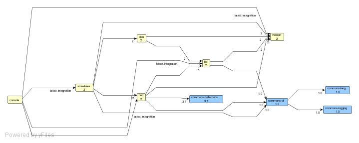

In the previous tutorial, you saw how to deal with dependencies between two simple projects. This tutorial will guide you through the use of Ivy in a more complete environment. All of the code for this tutorial is available in the <tt>src/example/multi-project</tt> directory of the Ivy distribution. <h1>Context</h1> Here is a 10000ft overview of the projects involved in this tutorial: <ul> <li>version</li> helps to identify module by a version <li>list</li> gives a list of files in a directory (recursively) <li>size</li> gives the total size of all files in a directory, or of a collection of files <li>find</li> find files in a given dir or among a list of files which match a given name <li>sizewhere</li> gives the total size of files matching a name in a directory <li>console</li> give access to all other modules features through a simple console app </ul> For sure this is not aimed to demonstrate how to develop a complex app or give indication of advanced algorithm :-) But this gives a simple understanding of how Ant+Ivy can be used to develop an application divided in multiple modules. Now, here is how these modules relate to each other: <center><a href="../samples/projects-dependencies-graph.jpg"><br/><i>click to enlarge</i></a></center> Modules in yellow are the modules described in this tutorial, and modules in blue are external dependencies (we will see how to generate this graph later in this tutorial). As you can see, we have here a pretty interesting set of modules with dependencies between each other, each depending on the latest version of the others. <h1>The example files</h1> The sources for this tutorial can be found in <tt>src/example/multi-project</tt> in the Ivy distribution. In this directory, you will find the following files: <ul> <li>[[gitfile:src/example/multi-project/build.xml build.xml]]</li>This is a root build file which can be used to call targets on all modules, in the order of their dependencies (ensuring that a module is always built before any module depending on it, for instance) <li>common <ul> <li>[[gitfile:src/example/multi-project/common/common.xml common.xml]]</li> the common build file imported by all build.xml files for each project. This build defines the targets which can be used in all projects. <li>[[gitfile:src/example/multi-project/common/build.properties build.properties]]</li>some properties common to all projects </ul> </li> <li>projects</li> contains a directory per module, with each containing: <ul> <li>ivy.xml</li>Ivy file of the module, describing its dependencies upon other modules and/or external modules. Example: <code type="xml"> <ivy-module version="1.0"> <info organisation="org.apache.ivy.example" module="find" status="integration"/> <configurations> <conf name="core"/> <conf name="standalone" extends="core"/> </configurations> <publications> <artifact name="find" type="jar" conf="core" /> </publications> <dependencies> <dependency name="version" rev="latest.integration" conf="core->default" /> <dependency name="list" rev="latest.integration" conf="core" /> <dependency org="commons-collections" name="commons-collections" rev="3.1" conf="core->default" /> <dependency org="commons-cli" name="commons-cli" rev="1.0" conf="standalone->default" /> </dependencies> </ivy-module> </code> <li>build.xml</li>The build file of the project, which consists mainly of an import of the common build file and of a module specific properties file: <code type="xml"> <project name="find" default="compile"> <property file="build.properties"/> <import file="${common.dir}/common.xml"/> </project> </code> <li>build.properties</li>Module specific properties + properties to find the common build file <code> projects.dir = ${basedir}/.. wkspace.dir = ${projects.dir}/.. common.dir = ${wkspace.dir}/common </code> <li>src</li> the source directory with all java sources </ul> </ul> Note that this example doesn't demonstrate many good practices for software development in general, in particular you won't find any unit test in these samples, even if we think unit testing is very important. But this isn't the aim of this tutorial. Now that you are a bit more familiar with the structure, let's have a look at the most important part of this example: the common build file. Indeed, as you have seen, all the module's build files only import the common build file, and define their dependencies in their ivy files (which you should begin to be familiar with). So, here are some aspects of this common build file: <h2>ivy settings</h2> <code type="xml"> <!-- setup ivy default configuration with some custom info --> <property name="ivy.local.default.root" value="${repository.dir}/local"/> <property name="ivy.shared.default.root" value="${repository.dir}/shared"/> <!-- here is how we would have configured ivy if we had our own ivysettings file <ivy:settings file="${common.dir}/ivysettings.xml" id="ivy.instance" /> --> </code> This declaration configures Ivy by only setting two properties: the location for the local repository and the location for the shared repository. It's the only settings done here, since Ivy is configured by default to work in a team environment (see [[tutorial/defaultconf default settings tutorial]] for details about this). For sure in a real environment, the shared repository location would rather be in a team shared directory (or in a more complex repository, again see the default settings tutorial to see how to use something really different). Commented out you can see how the settings would have been done if the default setting wasn't OK for our purpose. <h2>resolve dependencies</h2> <code type="xml"> <target name="resolve" depends="clean-lib, load-ivy" description="--> resolve and retrieve dependencies with ivy"> <mkdir dir="${lib.dir}"/> <!-- not usually necessary, ivy creates the directory IF there are dependencies --> <!-- the call to resolve is not mandatory, retrieve makes an implicit call if we don't --> <ivy:resolve file="${ivy.file}"/> <ivy:retrieve pattern="${lib.dir}/[artifact].[ext]" /> </target> </code> You should begin to be familiar with using Ivy this way. We call <i>resolve</i> explicitly to use the ivy file configured (the default would have been fine), and then call <i>retrieve</i> to copy resolved dependencies artifacts from the cache to a local lib directory. The pattern is also used to name the artifacts in the lib dir with their name and extension only (without revision), this is easier to use with an IDE, as the IDE configuration won't change when the artifacts version change. <h2>ivy-new-version</h2> <code type="xml"> <target name="ivy-new-version" depends="load-ivy" unless="ivy.new.revision"> <!-- default module version prefix value --> <property name="module.version.prefix" value="${module.version.target}-dev-b" /> <!-- asks Ivy for an available version number --> <ivy:info file="${ivy.file}" /> <ivy:buildnumber organisation="${ivy.organisation}" module="${ivy.module}" revision="${module.version.prefix}" defaultBuildNumber="1" revSep=""/> </target> </code> This target is used to ask Ivy to find a new version for a module. To get details about the module we are dealing with, we pull information out of the ivy file by using the ivy:info task. Then the [[ant:buildnumber]] task is used to get a new revision, based on a prefix we set with a property, by default it will be 1.0-dev-b (have a look at the default value for <tt>module.version.target</tt> in the <tt>common/build.properties</tt> file). Each module built by this common build file could easily override this by either setting a different <tt>module.version.target</tt> in its module specific <tt>build.properties</tt>, or even overriding <tt>module.version.prefix</tt>. To get the new revision, Ivy scans the repository to find the latest available version with the given prefix, and then increments this version by 1. <h2>publish</h2> <code type="xml"> <target name="publish" depends="clean-build, jar" description="--> publish this project in the ivy repository"> <ivy:publish artifactspattern="${build.dir}/[artifact].[ext]" resolver="shared" pubrevision="${version}" status="release" /> <echo message="project ${ant.project.name} released with version ${version}" /> </target> </code> This target publishes the module to the shared repository, with the revision found in the version property, which is set by other targets (based on ivy-new-version we have seen above). It can be used when a module reaches a specific milestone, or whenever you want the team to benefit from a new version of the module. <h2>publish-local</h2> <code type="xml"> <target name="publish-local" depends="local-version, jar" description="--> publish this project in the local ivy repository"> <ivy:publish artifactspattern="${build.dir}/[artifact].[ext]" resolver="local" pubrevision="${version}" pubdate="${now}" status="integration" forcedeliver="true" /> <echo message="project ${ant.project.name} published locally with version ${version}" /> </target> </code> This is very similar to the publish task, except that this publishes the revision to the local repository, which is used only in your environment and doesn't disturb the team. When you change something in a module and want to benefit from the change in another one, you can simply call <tt>publish-local</tt> in this module, and then your next build of the other module will automatically get this local version. <h2>clean-local</h2> <code type="xml"> <target name="clean-local" description="--> cleans the local repository for the current module"> <delete dir="${ivy.local.default.root}/${ant.project.name}"/> </target> </code> This target is used when you don't want to use your local version of a module anymore. For example, when you release a new version to the whole team, or discard your local changes and want to take advantage of a new version from the team. <h2>report</h2> <code type="xml"> <target name="report" depends="resolve" description="--> generates a report of dependencies"> <ivy:report todir="${build.dir}"/> </target> </code> Generates both an html report and a graphml report. For example, to generate a graph like the one shown at the beginning of this tutorial, you just have to follow the instructions given [[yed here]] with the graphml file you will find in <code>projects/console/build/</code> after having called report in the console project, and that's it, you have a clear overview of all your app dependencies! <h1>Playing with the projects</h1> You can play with this tutorial by using regular Ant commands. Begin in the base directory of the tutorial (src/example/multi-project), and run ant -p: <div class="shell"><pre> [<tutorial/log/multi-project-general-antp.txt>] </pre></div> This gives you an idea of what you can do here. To make sure you have at least one version of all your modules published in your repository (required to build modules having dependencies on the others), you can run <tt>ant publish-all</tt> (example log <a href="log/multi-project-general-publishall.txt">here</a>). You will see that Ivy calls the publish target on all the modules, following the order of the dependencies, so that a dependee is always built and published before its depender. Feel free to make changes in the source code of a module (changing a method name for instance) and in the module using the method, then call publish-all to see how the change in the dependee is compiled first, published, and then available to the depender which can compile successfully. Then you can go in one of the example project directories (like projects/find for instance), and run <tt>ant -p</tt>: <div class="shell"><pre> [<tutorial/log/multi-project-find-antp.txt>] </pre></div> You can see the targets available, thanks to the import of the <tt>common.xml</tt> build file. Play with the project by calling resolve, and publish, and see what happens when you do the same in other projects. An interesting thing to do for instance, is to change the dependencies of a project. If the module version now depends on a new commons library, you will see that all other projects depending on that version will get this library as part of their transitive dependencies once the new revision of the version project is published. Very easy! And if a project introduces a change with which the depender isn't compatible with yet, you can easily change the dependency in the depender to move from <tt>latest.integration</tt> to a fixed version with which the depender is compatible (probably the latest before the change). Keeping your modules under control is now very easy! By now, you should be pretty familiar with multi-project development with Ivy. We hope you will appreciate its power and flexibility! And these tutorials are only the beginning of your journey with Ivy, browse the [[reference reference documentation]] to learn more about the features, subscribe to the [[mailing-lists mailing lists]] to share your experience and ask questions with the community, browse the source code, open jira issues, submit patches, join in and help make Ivy the best of dependency management tools!